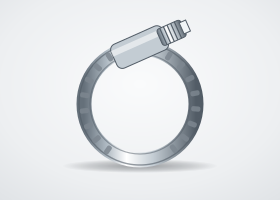
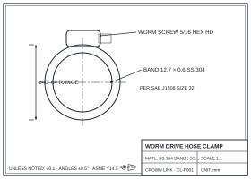

Hose Clamp
Worm-drive clamps with perforated 300-series stainless bands per SAE J1508, sized from 8 mm to over 250 mm diameter. The universal sealing clamp for automotive coolant, fuel, industrial hose, and ducting connections.
Request Quote